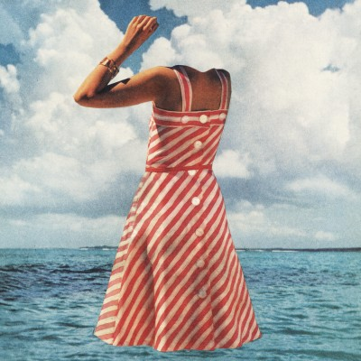
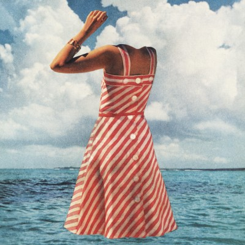
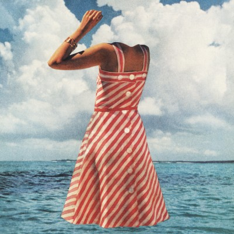
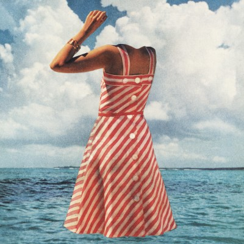

 

After Simple Focus owner JD Graffam gave a lecture on eye tracking and usability at ConvergeFL, Grooveshark asked us to help them improve the onboarding process for their recently launched redesign by conducting eye tracking and usability tests.
“When you sit a user down in front of an intuitive, modern website that lets her listen to pretty much any song ever written, she’s going to have an awesome time. When you’re providing that kind of joy already, it can be tough to find ways to make it an even better experience. Having a non-human, unemotional tool like an eye tracker to point out your blind spots can push your UI way past what you thought was its best possible self.”
This time, they wanted to get us involved at the earliest stage of the design process: concepting and ideating on innovative homepage ideas for a new version of Grooveshark, without any limitations.
Picking Simple Focus was an easy choice, with a portfolio showcasing a diversity of design skills ranging from broad UI concepts to fine visual details.
We launched an intensive design process involving our entire design team to generate as many design concepts as possible in a short time frame. We worked without restriction, generating hundreds of original, inventive, and occasionally impractical ideas, along with over 70 finished homepage concepts.
The Simple Focus team created a series of completely distinct designs covering an incredibly wide spectrum of ideas … Even now, almost a year later, elements from our project with Simple Focus are still at the core of much of our product direction.